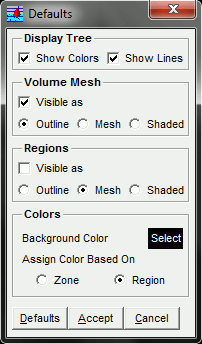

|  | This panel sets up the initial behavior and colors to be used when
reading in a CGNS file.
The first section, Display Tree, controls the display of connecting lines and color boxes within the Display Tree. The next section, Volume Mesh, indicates how the boundaries of the volume mesh for each zone are to be treated. The default is to show them as outlines. The initialization for the surface regions are set in the Regions section, and the default for these is to display them as mesh lines but with the visibility initially off. The Colors section defines the background color for the graphics
display and how to assign initial colors to the regions, either individually
or else on a zone basis. The Default button resets everything
to the default values.
|